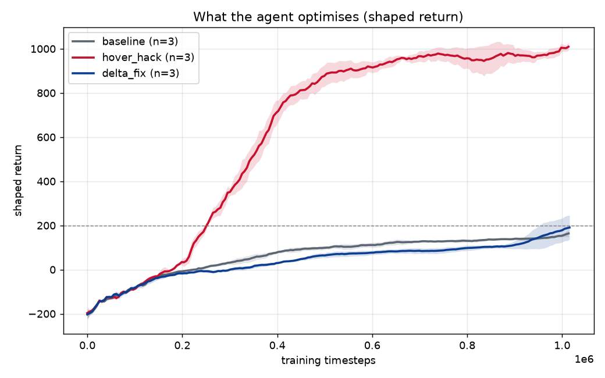
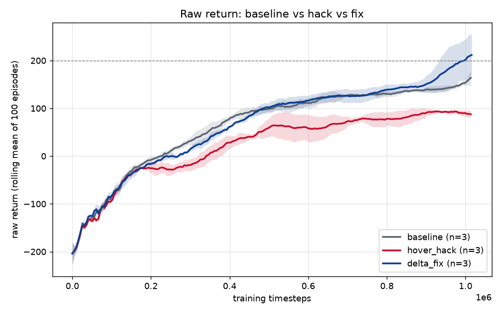
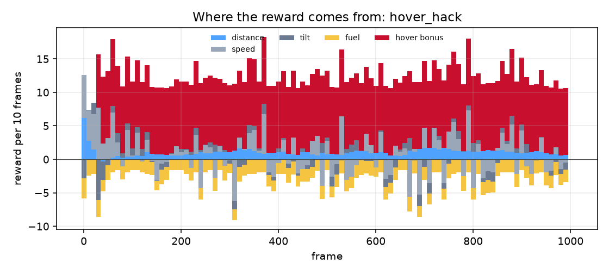
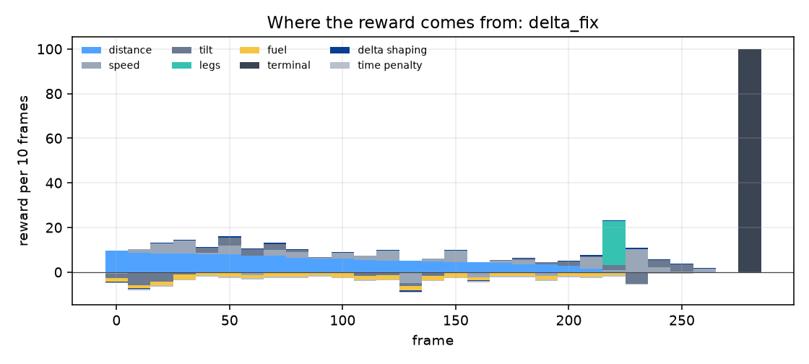
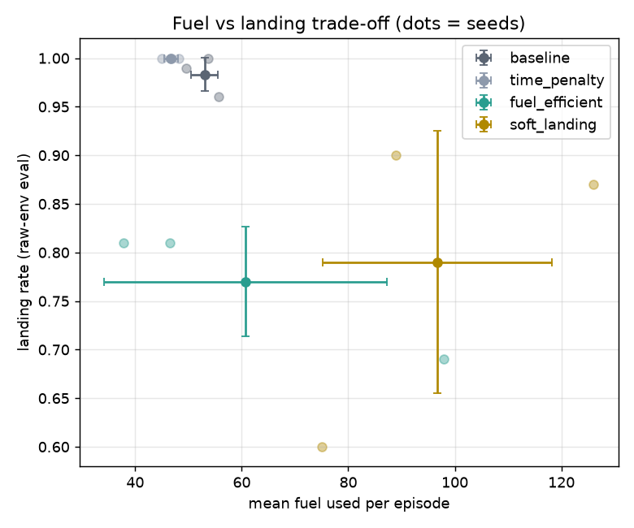
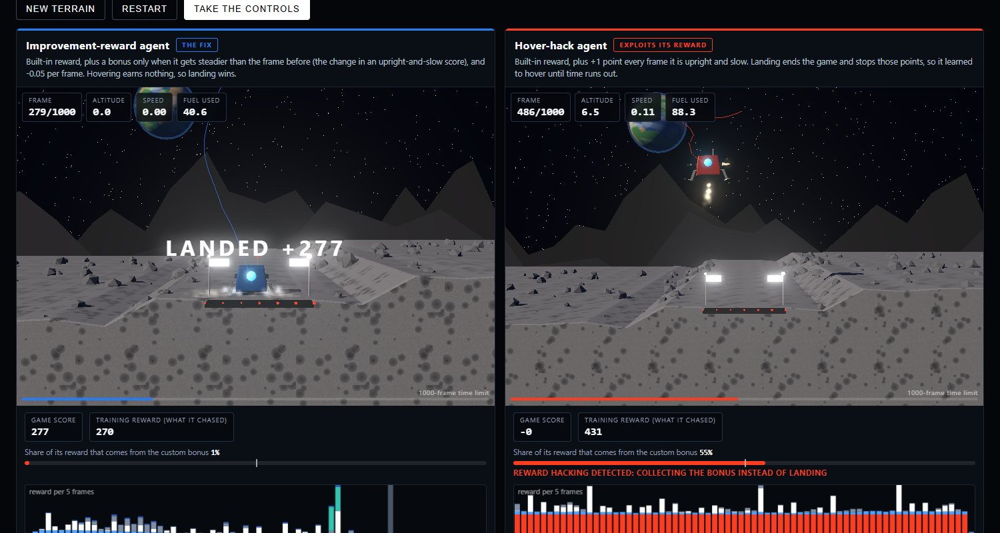
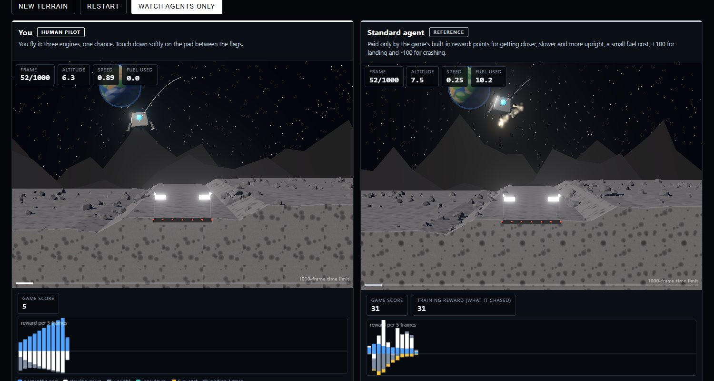

Summary
Reward shaping adds extra reward terms to speed up learning. Done carelessly, it creates loopholes. In Lunar Lander the episode is cut off after 1,000 frames and landing ends the episode, which also ends any per-frame payment. A bonus of +1 for every frame the lander is upright and slow therefore out-earns a successful landing, and PPO finds this. Across three seeds the hacked agent's training reward climbs to roughly 1,000 while its evaluation score on the true environment reward is −78 and it lands in only 1 of 300 evaluation episodes.
Replacing the bonus with improvement-based (potential-based) shaping removes the loophole: the extra reward telescopes over an episode, so there is nothing to farm by waiting. We evaluate eight reward designs on three seeds each, with all scores taken from the unmodified environment reward, and show the failure is not specific to one bonus (a tilt-only bonus fails the same way) and not purely a PPO artefact (one of three DQN seeds hovers too), though it is less consistent there.
1. Background
Reinforcement learning in one paragraph
An agent repeatedly observes an environment, picks an action, and receives a numerical reward. It is never told what to do; it learns which behaviour earns the most total reward. In Lunar Lander the agent sees 8 numbers (position, velocity, tilt, spin, two leg-contact flags) and chooses one of 4 actions each frame: do nothing, fire the left, main or right engine. The built-in reward pays for moving closer to the pad, slowing down and staying upright, charges a little for fuel, and gives +100 for a safe landing or −100 for a crash.
Reward hacking
The reward function is the only thing that tells the agent what you want. If it contains a loophole, a capable optimiser finds it. This is an instance of specification gaming, closely related to Goodhart's law: when a measure becomes the target, it stops being a good measure. The dangerous part is that the training score rises while the behaviour you care about gets worse, so monitoring the score alone hides the problem.
Potential-based shaping
The safe form of shaping (Ng, Harada & Russell, 1999) defines a potential Φ(s) that says how good a state is and pays the change in potential:
F(s, s′) = γ·Φ(s′) − Φ(s)
Summed over an episode these terms telescope to roughly Φ(end) − Φ(start), so shaping of this form does not change which policy is optimal; it only helps learning. A per-frame bonus for being in a good state has no such guarantee.
2. Method
Setup
- Environment: Gymnasium
LunarLander-v3(Box2D physics, 50 frames per second, 1,000-frame limit). - Algorithm: PPO (Stable-Baselines3, 16 parallel environments, 1M steps, standard published hyper-parameters). DQN for a robustness check.
- Seeds: 3 per reward design, training seeds 0–2.
- Intervention: a thin
RewardShapingWrapperadds custom reward terms. It never changes observations, termination or truncation (unit-tested), and always records the original reward and each custom term.
Evaluation protocol
- Raw reward only. Scores come from the unmodified environment reward, so a custom bonus can never inflate a result.
- 100 deterministic episodes per model, evaluation seeds disjoint from training seeds.
- Per episode we log return, length, landed, crashed, timed out (hit 1,000 frames), and fuel used.
- "Landed" is the environment's +100 (lander at rest); we also record whether it was on the pad.
The eight reward designs
Every design adds something to the built-in reward. The "rule" column says in plain terms what was added.
| Design | What is added to the built-in reward | Why we tried it | What happened (PPO) |
|---|---|---|---|
baseline | Nothing. | Reference. | Lands 98% of the time. |
time_penalty | −0.05 every frame, so wasting time costs points. | Does urgency help? | Still lands (100%), slightly faster and cheaper. |
hover_hack | +1 every frame the lander is upright and slow. | A plausible-looking bonus with a hidden loophole. | Hovers to timeout in 99.7% of episodes. |
delta_fix | Pays the improvement in an upright-and-slow score each frame, plus −0.05 per frame. | The principled fix. | Lands 99%, under 1% timeouts. |
delta_no_time | The improvement term only, no per-frame cost. | Ablation: does the time cost matter? | Lands 99%. The time cost was not needed. |
tilt_only_hack | +1 every frame the lander is level, ignoring position and speed. | Does the failure generalise to another bonus? | Times out in 99.7% of episodes. |
fuel_efficient | Fuel cost doubled. | A trade-off, not a hack. | Lands 77%; only 45% of episodes end on the pad.* |
soft_landing | Penalty on touchdown speed and tilt. | A trade-off, not a hack. | Lands 79%; 66% end on the pad.* |
* Trained for 500k steps instead of 1M, so not directly comparable with the other rows.
3. Results
All values are mean ± standard deviation over 3 seeds, from 100 raw-reward episodes per seed.
Loading table…
The score goes up while the behaviour gets worse


Where the reward comes from


Behaviour of all designs
baselinetime_penaltyhover_hackdelta_fixdelta_no_timetilt_only_hackfuel_efficientsoft_landingOne evaluation episode per design, seed-0 model. Clips are cropped to the first 12 seconds.
Fuel and landing trade-offs

4. A numeric hacking detector
Watching clips does not scale. HackingDetector computes metrics over a rolling window of episodes, usable as a Stable-Baselines3 callback during training or on saved evaluation logs:
- Timeout rate: fraction of episodes truncated at 1,000 frames. Hovering shows up as a spike.
- Mean episode length: drifts toward 1,000.
- Custom-term share: |sum of custom reward terms| divided by the total absolute reward. If a hand-written bonus supplies most of the agent's reward, it is probably being exploited. Potential-based shaping telescopes, so its share stays small.
An alert needs both a timeout rate above 30% and a custom-term share above 50% (thresholds are configurable). Requiring both matters: an agent that merely stalls early in training has timeouts but no bonus share.
hover_hack and all 3 tilt_only_hack runs, and none of the 18 other PPO runs.
During training the hover_hack warnings fired between roughly 0.5M and 0.65M steps, well before the end of training.
5. Does it generalise?
A second hack
tilt_only_hack (+1 per frame for staying level, nothing about position or speed) also times out in 99.7% of episodes (299 of 300). Any per-frame bonus for being in a state is farmable when the episode can be prolonged.
A second algorithm (DQN)
Same rewards, DQN instead of PPO (500k steps, 3 seeds, untuned).
One of three hover_hack seeds hovers (63% timeouts, bonus share 0.50, flagged); one diverged into constant crashes; one mostly lands. So the failure is not PPO-only, but it is much less consistent, and DQN is a weaker learner here overall (even the fix lands only 75%). With an untuned 500k-step DQN and three seeds, treat this as suggestive, not conclusive.
Wind (robustness)
Policies trained without wind, evaluated with Gymnasium's wind and turbulence (browser port of the environment, seed-0 policies, 60 episodes each):
| Landing rate | Calm | Breeze | Storm |
|---|---|---|---|
baseline | 1.00 | 0.97 | 0.42 |
delta_fix | 1.00 | 0.92 | 0.43 |
delta_no_time | 1.00 | 0.90 | 0.53 |
time_penalty | 1.00 | 0.97 | 0.67 |
All designs degrade in a storm because none was trained with wind, and the fix is about as robust as the baseline. One seed and 60 episodes: indicative only.
6. Findings
- The hack is reliable. A +1 per-frame bonus for being upright and slow made the PPO agent hover to timeout in 3 of 3 seeds (299 of 300 episodes timed out, 1 landed, −78 true return).
- Training reward hid it. Training reward rose to about 1,000 while the true score stayed low. Timeout rate, episode length and the bonus share exposed it.
- Improvement-based shaping fixes it. Paying the change in an upright-and-slow score restored 99% landings with under 1% timeouts.
- The structure matters, not the time cost. Removing the per-frame time cost (
delta_no_time) changed nothing important here, so the delta form is what removes the loophole. - The failure is not specific to one bonus, and appears under a second algorithm (1 of 3 DQN seeds), though less consistently.
- Trade-offs are a different problem. Doubling fuel cost or penalising touchdown speed lowered landing rates and often ended off the pad — a reminder that "landed" and "landed on the pad" are different outcomes.
Limitations
- Three seeds per design: standard deviations are small, but this is an engineering study, not a statistical one.
- One environment, hand-picked bonus magnitudes, and untuned DQN. The DQN and wind results are indicative.
- "Steps to reach a score" uses stochastic training returns, which sit below deterministic evaluation, so it is not reported as a headline number.
- The browser simulator is a faithful behavioural port of the environment (physics via Box2D), not bit-identical to the Python run; the headline numbers above all come from the Python evaluation.
7. Reproduce and reuse
The wrapper and detector are packaged as a small library (rewardlab, installable with pip install -e .) with tests.
import gymnasium as gym
from stable_baselines3 import PPO
from rewardlab import RewardShapingWrapper, HackingCallback, make_reward_fn
env = RewardShapingWrapper(gym.make("LunarLander-v3"), make_reward_fn("hover_hack"))
model = PPO("MlpPolicy", env)
model.learn(100_000, callback=HackingCallback(episodes_path="episodes.csv"))python scripts/run_all.py # all designs x seeds
python -m rewardlab.analysis # tables and figures
python scripts/export_policies.py # export policies for this site
python -m http.server -d web 8000 # open the site and the simulatorEvery run is defined by (design, seed, config); evaluation seeds differ from training seeds; dependency versions are pinned in requirements.txt.
Try it yourself
The simulator runs the real trained policies in your browser on a port of the environment. Race one of them, or watch the hacked and fixed agents side by side with a live breakdown of where their reward comes from.

